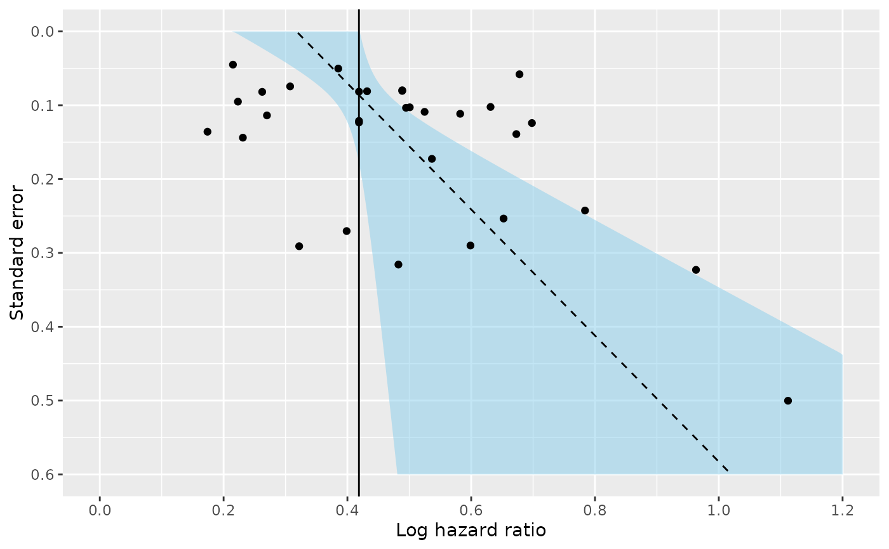
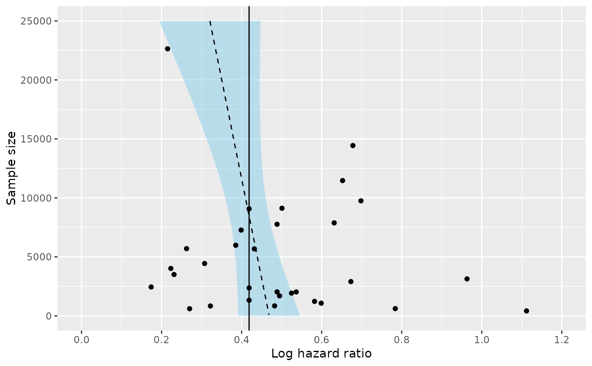

Generates a funnel plot for a fitted fat object.
Usage
# S3 method for class 'fat'
plot(
x,
ref,
confint = TRUE,
confint.level = 0.1,
confint.col = "skyblue",
confint.alpha = 0.5,
confint.density = NULL,
xlab = "Effect size",
add.pval = TRUE,
...
)Arguments
- x
An object of class
fat- ref
A numeric value indicating the fixed or random effects summary estimate. If no value is provided then it will be retrieved from a fixed effects meta-analysis (if possible).
- confint
A logical indicator. If
TRUE, a confidence interval will be displayed for the estimated regression model (based on a Student-T distribution)- confint.level
Significance level for constructing the confidence interval.
- confint.col
The color for filling the confidence interval. Choose
NAto leave polygons unfilled. Ifconfint.densityis specified with a positive value this gives the color of the shading lines.- confint.alpha
A numeric value between 0 and 1 indicating the opacity for the confidence region.
- confint.density
The density of shading lines, in lines per inch. The default value of
NULLmeans that no shading lines are drawn. A zero value of density means no shading nor filling whereas negative values andNAsuppress shading (and so allow color filling).- xlab
A title for the x axis
- add.pval
Logical to indicate whether a P-value should be added to the plot
- ...
Additional arguments.
Examples
data(Fibrinogen)
b <- log(Fibrinogen$HR)
b.se <- ((log(Fibrinogen$HR.975) - log(Fibrinogen$HR.025))/(2*qnorm(0.975)))
n.total <- Fibrinogen$N.total
# A very simple funnel plot
plot(fat(b=b, b.se=b.se), xlab = "Log hazard ratio")

# Plot the funnel for an alternative test
plot(fat(b=b, b.se=b.se, n.total=n.total, method="M-FIV"), xlab = "Log hazard ratio")
